Chapter 2: Visual Programming in Python
Notes
- Tkinter is a GUI library included as part of the Python Standard Library
- It provides the basic graphical widgets for building graphical user interfaces, e.g.
- Windows
- Buttons
- Radio Buttons
- Check boxes
- Entry fields
- List boxes
- Combo boxes
- and more…
- A simple two-button tkinter program can looks like below
import tkinter as tk
from tkinter import messagebox
# Set up the window
root = tk.Tk()
root.geometry("100x300+300+300")
# Write a slogan out to a message box
def display_slogan():
messagebox.showinfo("Our Message", "Tkinter is easy to use")
# create a button to call the message
slogan = tk.Button(root, text="Hello", command=display_slogan)
slogan.pack(side=tk.LEFT, padx=10)
# create a quit button
quit_button = tk.Button(root, text="QUIT", fg="red", command=quit)
quit_button.pack(side=tk.RIGHT, padx=10)The code above can also be found in 01-slogan.py
tk.Tk()sets up the main window of the programA button can then be created via
tk.Button- Most widgets accept a parent widget
- i.e. The parent widget contains the child widget
- We then define
textwhich defines the text shown on the label- We can colour the text with the
fg(foreground) parameter
- We can colour the text with the
Buttonhas a handle for a callback which is executed when the button is clicked- Here the
commandargument - We link the
Hellobutton todisplay_sloganwhich is a simple function that displays a message box - The
QUITbutton is linked to the pythonquitfunction which is a simple built-in for exiting a python program- it is designed for interpreteer sessions and in general one should prefer
sys.exitfrom thesysbuilt-in
- it is designed for interpreteer sessions and in general one should prefer
Once created the placement of widgets can be controlled by setting the layout
- Two common layouts are
packandgrid- Here we use the
tkspecial constanttk.LEFTandtk.RIGHTto control the placement of the buttons - This makes the buttons appear side-by-side padx(and it’s partnerpady) control the amount of spacing between widgets
- Here we use the
- Two common layouts are
A
tkinter.messageboxis a dialog that pops up and yanks focus- A user must acknowledge the message box before they can continue
The program above should look something like below when run
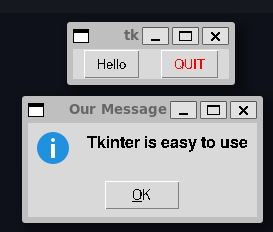
A simple window with two buttons, one of which opens a message box
Importing Fewer Names
- Tkinter is designed to consist of a number of different submodules
- Each submodule is designed to be explicitly loaded to avoid memory consumption
- If we try to use
messageboxwithout explicitly importing the submodule it won’t load
- If we try to use
Creating an Object-Oriented Version
- In the program above the function to be executed by a button is passed to the constructor as a handle
- An Object-Oriented approach, might be to provide a
commandmethod on theButtonclass- The
commandmethod is overwritten or implemented by subclasses of different functionality
- The
- We start by defining the abstact base class
- This is a class that effectively defines what our new
DerivedButtonclasses should look like - We provide an
__init__constructor that acts as a pass through constructor for thetk.Buttonbase class**kwargsin the function signature captures keyword arguments of the formkey=valueprovided in the call- These are stored in the variable
kwargsas a dict - These are then unpacked via back into
key=valuearguments via the**unpacking syntax
- These are stored in the variable
- We define an abstract method
commandthat is the implementation for whatcommandis executed when a button is called- The
__init__call links this method to the base-classButtonand it’scommandinterface
- The
- This is a class that effectively defines what our new
- The abstract class is not intended to be instantiated directly
import tkinter as tk
class DerivedButton(tk.Button):
def __init__(self, root, **kwargs):
super().__init__(root, **kwargs)
super().config(command=self.command)
# abstract method to by overwritten by children
def command(self):
pass- Now we can define our
OKButtonandQuitButtonas concrete subclasses ofDerivedButton- These should be directly instantiated
from tkinter import messagebox
class OKButton(DerivedButton):
def __init__(self, root):
super().__init__(root, text="OK")
def command(self):
messagebox.showinfo("Our Message", "Tkinter is easy to use")
class QuitButton(DerivedButton):
def __init__(self, root):
super().__init__(root, text="Quit", fg="red")
def command(self):
quit()- Here the base class
Buttonis hooked into theDerivedButtoncommandmethod by theDerivedButtonbase class- Now when we create an
OKButtonandQuitButtonwe redefine thecommandfunction for those specific classes - Now when we click the button the redefined
commandmethod is invoked
- Now when we create an
- This an example of polymorphism
- Building the UI is then pretty simple since the classes mostly handle constructing themselves
- The complete code can be found in 02-derived-button.py
def buildUI():
root = tk.Tk()
root.geometry("300x100+300+300")
slogan = OKButton(root)
slogan.pack(side=tk.LEFT, padx=10)
button = QuitButton(root)
button.pack(side=tk.RIGHT, padx=10)
root.mainloop()- You could also put the
packmethods inside the classes- Potentially as an
__init__parameter
- Potentially as an
Using Message Boxes
- As discussed the message box creates a dialog window that must be acknowledged
- There are different ways of calling the message box which modifies how it is displayed
- The code below creates a simple window with three buttons which can each call a different message box
We’ve already seen
showinfoshowwarningstyles the message as a warning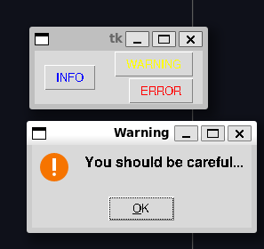
A warning box, on Ubuntu this contains an orange exclamation mark showerrorstyles the message as an error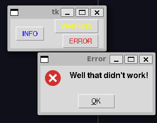
An error box, on Ubuntu this contains a red cross symbol
import tkinter as tk
import tkinter.messagebox
# Set up the window
root = tk.Tk()
# Write a slogan out to a message box
def display_info():
tk.messagebox.showinfo("Info", "Consider yourself informed")
def display_warning():
tk.messagebox.showwarning("Warning", "You should be careful...")
def display_error():
tk.messagebox.showerror("Error", "Well that didn't work!")
info_button = tk.Button(root, text="INFO", fg="Blue", command=display_info)
info_button.pack(side=tk.LEFT, padx=10)
warning_button = tk.Button(root, text="WARNING", fg="Yellow", command=display_warning)
warning_button.pack(padx=10)
error_button = tk.Button(root, text="ERROR", fg="red", command=display_error)
error_button.pack(side=tk.RIGHT, padx=10)
root.mainloop()The code is contained in 03-messagebox.py
Note that
tkuses the native windowing system of the Operating System it runs on- This means that
tkmay look different on your program
- This means that
The message box also provides dialogs for standard prompts to the user
askquestionfor asking a question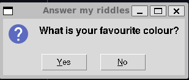
The askquestiondialog looks shows a question mark with yes and no buttonsaskyesnofor asking a yes or no question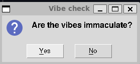
The askyesnodialog looks identical to theaskquestiondialog on Ubuntuaskyesnocancelfor asking a yes or no question with the option to cancel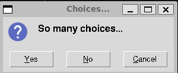
The askyesnocanceldialog looks like theaskyesnobut has an additional cancel buttonaskokcancelfor asking for approval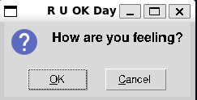
The askokcancelshows a question mark with ok and cancel buttonsaskretrycancelfor asking to retry an operation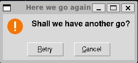
The askretrycancellooks likeaskokcancelbut has a warning exclamation mark rather than a question mark
Again we have a program that contains buttons that let’s you look at all these dialogs (See 04-questioning-message-box.py)
import tkinter as tk
import tkinter.messagebox
# Write a slogan out to a message box
def ask_ok():
tk.messagebox.askokcancel("R U OK Day", "How are you feeling?")
def ask_question():
tk.messagebox.askquestion("Answer my riddles", "What is your favourite colour?")
def ask_retry():
tk.messagebox.askretrycancel("Here we go again", "Shall we have another go?")
def ask_yesno():
tk.messagebox.askyesno("Vibe check", "Are the vibes immaculate?")
def ask_yesnocancel():
tk.messagebox.askyesnocancel("Choices...", "So many choices...")
button_params = [
(ask_ok, "Ok"),
(ask_question, "Question"),
(ask_retry, "Retry"),
(ask_yesno, "Yes / No"),
(ask_yesnocancel, "Yes / No / Cancel"),
]
root = tk.Tk()
for cmd, label in button_params:
but = tk.Button(root, text=label, command=cmd)
but.pack(padx=10, pady=10)
root.mainloop()File Dialogs
Like with message boxes tkinter provides a pre-made dialog for selecting files
- Called
filedialog
- Called
filedialoghas a number of methods for interacting with filesaskopenfilenameopens a dialog for selecting a file by name- Has an
okandcancelbutton - Pressing
okreturns a sring with the full path of the selected file - Pressing
cancelreturns an empty string
- Has an
Below is an example of a file dialog
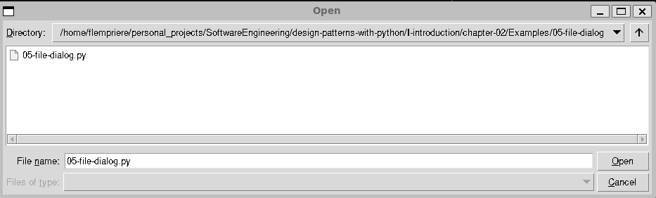
The dialog opened by filedialog.askopenfilename. A menu is shown to select files from the specified directory along with an ok and cancel button. A dropdown menu can be used to narrow the choice of file types- The full code is in 05-file-dialog.py
import tkinter as tk
import tkinter.filedialog
fname = tk.filedialog.askopenfilename()
print(fname)Other methods on the
filedialoginclude,askdirectory- Asks for a directory and returns the path
askopenfile- Ask for a file to open and return the opened file stream
askopenfilenamesandaskopenfilesare like the non-plural variants but return multiple filesasksaveasfileandasksaveasfilenameask for a filename to save asasksaveasfilereturns the opened fileasksaveasfilenamereturns the file name
The Pack Layout Manager
packis the most basic tkinter layout managerIt’s use is generally discouraged in favour of layout managers like
gridbut for simple use cases it can be useful to knowIt has a number of layout options
Parameter Description fill=tk.XStretch widget to fill frame in the X direction fill=tk.YStretch widget to fill frame in the Y direction fill=tk.BOTHStretch widget to fill in both directions side=tk.LEFTPosition widget to left side of the frame side=tk.RIGHTPosition widget to right side of the frame expand=nDistribute remaining space in the frame among all widgets when nis nonzeroanchorWhere the widget is placed within the packing box. Options are tk.CENTER(default),tk.N,tk.E,tk.S,tk.Wor combinations e.gtk.NEpadX, padYNumber of pixels to pad the X and Y dimensions respectively Below is a simple example showing how to put together a simple dialog using multiple components laid out with
pack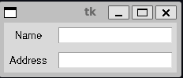
A simple two-row example using the packed layout. Each row consists of a tk.Labelleft-aligned on the left, and atk.Entryon the right stretched to fill the remaining space
import tkinter as tk
root = tk.Tk()
# Create first row, taking up the entire X dimension
first_row = tk.Frame(root)
first_row.pack(fill=tk.X)
# Add widgets to the first row
label_1 = tk.Label(first_row, text="Name", width=7)
label_1.pack(side=tk.LEFT, padx=5, pady=5)
entry_1 = tk.Entry(first_row)
entry_1.pack(fill=tk.X, padx=5, pady=5) # fill the remaining X space
# Create the second row, again taking the entire X dimension
second_row = tk.Frame(root)
second_row.pack(fill=tk.X)
# Add widgets to the second row
label_2 = tk.Label(second_row, text="Address", width=7)
label_2.pack(side=tk.LEFT, padx=5, pady=5)
entry_2 = tk.Entry(second_row)
entry_2.pack(fill=tk.X, padx=5, pady=5)
root.mainloop()The ttk Library
Tkinter and the underlying Tk Windowing toolkit is a relatively old GUI framework
- Some of it’s widgets look outdated
- Also the default set of widgets is missing some common modern-style widgets
Newer versions of Tk often also include a more modern set of widgets in the
ttklibrary- These are kept in a separate library to keep the two different widget styles distinct
ttkalso modifies how Tk manages state- Aims to decouple graphics from the logic of managing the state
Some of the new widgets in
ttkincludButtonCheckButtonEntryFrameLabelLabelFrameMenuButtonPanedWindowRadioButtonScaleScrollbar
To use the new style widgets, simply import and use the appropriate
tkinter.ttkwidgetsFor example, using the modernised button we simply replace
tk.Buttonwithttk.Button- There is some caveat in that
ttkuses a different form for styling foregroundandbackgroundetc. are no longer part of the constructor- Instead you register
Styleobjects and then invoke them on the object
- There is some caveat in that
For example, the new code for the quit button is,
ttk.Style().configure("W.TButton", foreground="red") quit_button = ttk.Button(root, text="QUIT", command=quit, style="W.TButton") quit_button.pack(side=tk.RIGHT, padx=10)The full code example is given in 07-ttk-button
import tkinter as tk
import tkinter.messagebox
import tkinter.ttk as ttk
# Set up the window
root = tk.Tk()
# Write a slogan out to a message box
def display_slogan():
tk.messagebox.showinfo("Our Message", "Tkinter is easy to use")
# create a button to call the message
slogan = ttk.Button(root, text="Hello", command=display_slogan)
slogan.pack(side=tk.LEFT, padx=10)
# create a quit button
ttk.Style().configure("W.TButton", foreground="red")
quit_button = ttk.Button(root, text="QUIT", command=quit, style="W.TButton")
quit_button.pack(side=tk.RIGHT, padx=10)
root.mainloop()The resulting window looks like
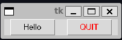
The basic two-button widget updated to use the ttkbuttons
Responding to User Input
- Python command-line programs can often read input via the
inputfunction- Return’s user supplied strings
- When using graphical-user interfaces, it is often important to have widget’s that provide similar functionality
- The basic version of this in tkinter is the
Entrywidget - Provides a simple one-line text entry
- The basic version of this in tkinter is the
- Here is a simple greeter program to demonstrate
Entry, it accepts a name from the user and greets them
import tkinter as tk
class Greeter:
def build(self):
root = tk.Tk()
tk.Label(
root,
text="What is your name?",
justify=tk.LEFT,
fg="blue",
pady=10,
padx=20,
).pack()
# set up the Entry widget
self.name_entry = tk.Entry(root)
self.name_entry.pack()
# associate button to read the entry
self.ok_button = tk.Button(root, text="Ok", command=self.get_name)
self.ok_button.pack()
# set up greater output
self.greet_label = tk.Label(root, text="", fg="blue")
self.greet_label.pack()
tk.mainloop()
def get_name(self):
new_name = self.name_entry.get()
self.greet_label.configure(text="Hi " + new_name + "!")
if __name__ == "__main__":
greeter = Greeter()
greeter.build()The code can be found in the python script 08-entry.py. It should produce a widget like below
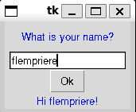
A simple program. A label requests a name, and provides an entry box. When the OKbutton is clicked a label appears greeting the provided name
Adding Two Numbers
- Often when taking user input, we want to convert it from a
strto some other format- A common example is a number
- As with command-line interfaces, graphical user interfaces should generally handle invalid input gracefully too
- A common use-case for the
messageboxwidget
- A common use-case for the
- For example, here we request two numbers from the user, validate them and add them together
The program should look like below
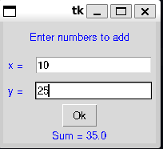
A simple program for adding two numbers In the case of an error the program will instead look like below
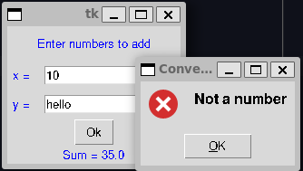
The adder program in case of an error
- The code implementation below can be found in 09-adder.py
import tkinter as tk
import tkinter.messagebox
class NumberEntry(tk.Frame):
def __init__(self, master, label):
super().__init__(master)
label = tk.Label(self, text=label, width=3, fg="blue")
label.pack(side=tk.LEFT, padx=5, pady=5)
self.entry = tk.Entry(self)
self.entry.pack(fill=tk.X, padx=5, pady=5)
def get(self):
return self.entry.get()
class Adder:
def build(self):
root = tk.Tk()
tk.Label(
root,
text="Enter numbers to add",
justify=tk.LEFT,
fg="blue",
pady=10,
padx=20,
).pack()
# Create each row of numbers
self.x_row = NumberEntry(root, "x = ")
self.x_row.pack()
self.y_row = NumberEntry(root, "y = ")
self.y_row.pack()
# associate button to read the entry
self.ok_button = tk.Button(root, text="Ok", command=self.add_numbers)
self.ok_button.pack()
# set up output
self.sum_label = tk.Label(root, text="", fg="blue")
self.sum_label.pack()
tk.mainloop()
def add_numbers(self):
try:
x = float(self.x_row.get())
y = float(self.y_row.get())
self.sum_label.configure(text="Sum = " + str(x + y))
except ValueError:
tk.messagebox.showerror("Conversion Error", "Not a number")
if __name__ == "__main__":
adder = Adder()
adder.build()- One fun implementation of the code above is that we define a lightweight
NumberEntrywidget- This centralises the creation of the row’s for getting a number from the user
- Mean’s we can reuse it for both rows
- This is a nice case of Don’t Repeat Yourself
- We use a
try,exceptblock to catch the error and show the error by calling atk.messagebox.showerror
Applying Colours in Tkinter
Tkinter provides pre-defined named colour strings
"white""black""red""green""blue""cyan""yellow""magenta"
Alternatively colours can be specified as hexadecimal values
Can be
#RGB#RRGGBB- 12-bit strings
- 16-bit strings
For example,
"red"=#f00- Purple =
#c0f
Each digit is hexadecimal, i.e.
0toFFor example, recall the QUIT button we defined using the
ttkset was coloured via,
ttk.Style().configure("W.TButton", foreground="red")
quit_button = ttk.Button(root, text="QUIT", command=quit, style="W.TButton")
quit_button.pack(side=tk.RIGHT, padx=10)Communicating Between Classes
- Creating individual self-contained widgets is pretty straightforward
- How do we manage communicating betwen widgets that are not self-contained?
- For example, how does a different part of the program respond to a choice from our
ColourButton?
- For example, how does a different part of the program respond to a choice from our
- The correct way to set-up communications in a program is an open discussion
- One common pattern here that will be discussed later is the Mediator Pattern
Using the Grid Layout
- The grid layout manager is the more modern and preferred layout manager over pack
- Allows widgets to be arranged by placing them at select rows and columns
- No limit on what are valid row and column numbers (as long as they are non-negative)
- Layout determined once set
- Don’t need to declare the number of rows or columns upfront
- For example, we can replicate our pack layout example but with a grid
import tkinter as tk
root = tk.Tk()
root.title("grid")
# Add widgets to the first row
label_1 = tk.Label(root, text="Name", sticky=tk.W)
label_1.grid(row=0, column=0, padx=5, pady=5)
entry_1 = tk.Entry(root)
entry_1.grid(row=0, column=1)
# Add widgets to the second row
label_2 = tk.Label(root, text="Address")
label_2.grid(row=1, column=0, padx=5, pady=5, sticky=tk.W)
entry_2 = tk.Entry(root)
entry_2.grid(row=1, column=1, padx=5)
root.mainloop()- We can see this implementation is much simpler than
packwhere we had to introducedFrameobjects for each row and ensure the pack ordering and parameters were correct for every object - By default widgets are aligned to the center of the grid
- This can look odd especially for layered text labels since they won’t b aligned
gridprovides thestickyparameter which can be used to stick a widget to a given side of the grid cell- The sticky values are
tk.Ntk.Etk.Stk.W- Combinations of the above like
tk.N + tk.E
- The sticky values are